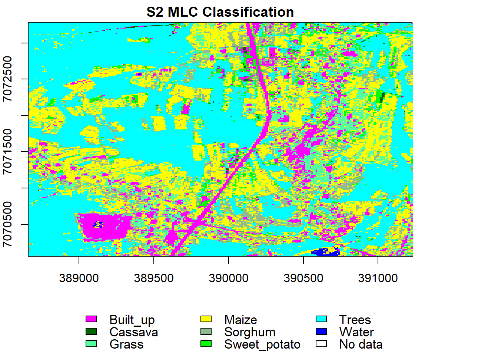
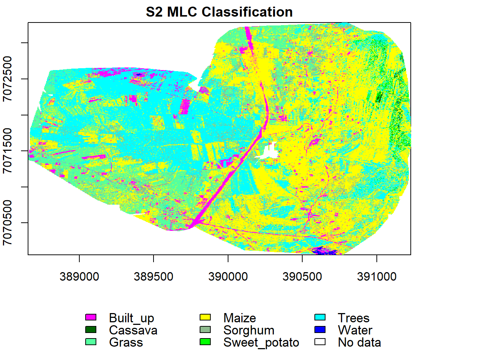

Crop mapping
Background
Information on spatial distribution of crops is an important step towards yield estimation. We need to know where the crops are before we estimate the yield in a given region. Ground mapping approaches like surveying are expensive and time intensive. Remote sensing offers an effective and efficient platform for mapping thanks to improved temporal and spatial resolutions. In this case we supplement optical data with UAV images for training sites collection, and image fusion for crop mapping.
For crop mapping we use two different classification algorithms:
- Random Forests (RF) by Breiman 2001.
- Maximum Likelihood Classification (MLC).
Data preparation
Load libraries, declare variables and data paths.
rm(list=ls(all=TRUE)) #Clears R memory
unlink(".RData")
if (!require("pacman")) install.packages("pacman"); library(pacman)
p_load(raster, terra, randomForest,RStoolbox)
options(warn=1)
cat("Set variables and start processing\n")## Set variables and start processingRoot <- 'D:/JKUAT/RESEARCH_Projects/Eswatini/Data/'
Path_out <- paste0(Root,"Output/")Load Mpolonjeni UAV images for mission 1–5 and Sentinel 2. We will mosaic the UAV images to one image at 1 m spatial resolution and save to disk later. Once this is done we skip this process every other time we ru the script.
#Sentinel 2
path <- list.files(paste0(Root,'S2/interim/'),pattern = (".tif$"), recursive = TRUE, full.names = TRUE)
s <- rast(path)
names(s) <- c("b", "g","r", "nir")
s## class : SpatRaster
## dimensions : 10980, 10980, 4 (nrow, ncol, nlyr)
## resolution : 10, 10 (x, y)
## extent : 3e+05, 409800, 6990220, 7100020 (xmin, xmax, ymin, ymax)
## coord. ref. : +proj=utm +zone=36 +south +datum=WGS84 +units=m +no_defs
## sources : RT_T36JUR_20210418T073611_B02.tif
## RT_T36JUR_20210418T073611_B03.tif
## RT_T36JUR_20210418T073611_B04.tif
## ... and 1 more source(s)
## names : b, g, r, nir#UAV
mosaicname <- paste0(Path_out,'Mpolonjeni_W1_Mosaic.tif')
if(!file.exists(mosaicname)){
folders <- list.dirs(paste0(Root,'WingtraOne/Mpolonjeni'),recursive=TRUE)[-1]
folders
for (i in 1:length(folders)) {
path <- list.files(folders[i], pattern = (".tif$"))
# Remove all before and up to "reflectance_" in gsub
path <- path[order(gsub(".*reflectance_","",path))][-4]
#reorder the bands to match those in S2
paths <- path
paths[3] <- path[4]
paths[4] <- path[3]
temp <- rast(paste0(folders[i],"/",paths))
names(temp) <- c("b", "g", "r", "nir")
assign(paste0("v", i), temp)
}
}else{
v <- rast(mosaicname)
}We now have all the image missions loaded from corresponding sub-folders, stacked, and dynamically allocated variables i.e. \(\text{v1},\text{v2},\dots,\text{v5}\). Resample all the images to 1 m spatial resolution using bilinear approach and mosaic them.
if(!file.exists(mosaicname)){
temp <- aggregate(v1[[1]], 9)
res(temp) <- c(1, 1)
v1 <- resample(v1, temp, method='bilinear')
temp <- aggregate(v2[[1]], 9)
res(temp) <- c(1, 1)
v2 <- resample(v2, temp, method='bilinear')
temp <- aggregate(v3[[1]], 9)
res(temp) <- c(1, 1)
v3 <- resample(v3, temp, method='bilinear')
temp <- aggregate(v4[[1]], 9)
res(temp) <- c(1, 1)
v4 <- resample(v4, temp, method='bilinear')
temp <- aggregate(v5[[1]], 9)
res(temp) <- c(1, 1)
v5 <- resample(v5, temp, method='bilinear')
}Let’s now mosaic the scenes to form one image. We will use median to average out the overlaps. Median is preferred because it has been shown to be robust to outliers compared to the mean.
if(!file.exists(mosaicname)){
v <- mosaic(v1, v2, v3, v4, v5, fun="median")
}## Warning: [mosaic] rasters did not align and were resampledSave the mosaic to disk.
mosaicname <- paste0(Path_out,'Mpolonjeni_W1_Mosaic.tif')
if(!file.exists(mosaicname)){
writeRaster(v, mosaicname)
}Crop/clip Sentinel 2 image to UAV image extents.
s <- crop(s, ext(v), snap="near")Display the images side by side.
x11()
par(mfrow = c(1, 2)) #c(bottom, left, top, right)
plotRGB(s, r="nir", g="r", b="g", stretch="lin", axes=T, mar = c(4, 5, 1.4, 0.2), main="S2", cex.axis=0.5)
box()
plotRGB(v, r="nir", g="r", b="g", stretch="lin", axes=T, mar = c(4, 5, 1.4, 0.2), main="UAV", cex.axis=0.5)
box()
Training data sampling
Load train data.
#ref <- vect(paste0(Root,'Vector/Training_Sites_Mpolonjeni.shp'), "polygons")
ref <- shapefile(paste0(Root,'Vector/Training_Sites_Mpolonjeni.shp'))Sample points from the polygons (stratified random sampling).
set.seed(530)
samp <- spsample(ref, 4000, type='stratified')## Warning in proj4string(obj): CRS object has comment, which is lost in output# add the land cover class to the points
samp$class <- over(samp, ref)$Name
table(samp$class)##
## built_up cassava grass maize sorghum sweet_potato
## 736 107 144 715 229 729
## trees waterbody
## 967 353sort(unique(samp$class))## [1] "built_up" "cassava" "grass" "maize" "sorghum"
## [6] "sweet_potato" "trees" "waterbody"sum(table(samp$class))## [1] 3980Transform samples to coordinates of the image.
samp <- spTransform(samp, crs(s))
nClasses <- 8
Classes <- data.frame(classID=c(1:8),class=c('Built_up','Cassava', 'Grass',
'Maize', 'Sorghum', 'Sweet_potato','Trees','Water'))Display S2 image and the training points.
add_legend <- function(...) {
opar <- par(fig=c(0, 1, 0, 1), oma=c(0, 0, 0, 0),
mar=c(0, 0, 0, 0), new=TRUE)
on.exit(par(opar))
plot(0, 0, type='n', bty='n', xaxt='n', yaxt='n')
legend(...)
}
x11()
#par(mar = c(4, 4, 1.4, 0.1)) #c(bottom, left, top, right)
plotRGB(s, r="nir", g="r", b="g", stretch="lin", axes = TRUE, mar = c(4, 5, 1.4, 0.1))
#points(samp, col="blue", cex=.5)
lines(spTransform(ref, crs(s)), col="blue", lwd=1.5)
add_legend("bottom", legend="Reference data",
pch=c(0,15), col="blue", horiz=T, bty='n', cex=1.1)
Extract UAV and S2 pixels values overlaid by points and split them into training and validation points.
trainData.v <- extract(brick(v), samp, cellnumbers=F, df=T, sp=T)
knitr::kable(head(trainData.v))| class | b | g | r | nir |
|---|---|---|---|---|
| waterbody | 0.0625616 | 0.0964470 | 0.0989978 | 0.0836505 |
| waterbody | 0.0643933 | 0.0971735 | 0.1009569 | 0.0849024 |
| waterbody | 0.0643933 | 0.0971735 | 0.1009569 | 0.0849024 |
| waterbody | 0.0642581 | 0.0969432 | 0.1003542 | 0.0865044 |
| waterbody | 0.0645692 | 0.0981981 | 0.1022022 | 0.0864920 |
| waterbody | 0.0642581 | 0.0969432 | 0.1003542 | 0.0865044 |
trainData.s <- extract(brick(s), samp, cellnumbers=F, df=T, sp=T)
knitr::kable(head(trainData.s))| class | b | g | r | nir |
|---|---|---|---|---|
| waterbody | 0.0228 | 0.0253 | 0.024 | 0.0227 |
| waterbody | 0.0228 | 0.0253 | 0.024 | 0.0227 |
| waterbody | 0.0228 | 0.0253 | 0.024 | 0.0227 |
| waterbody | 0.0228 | 0.0253 | 0.024 | 0.0227 |
| waterbody | 0.0228 | 0.0253 | 0.024 | 0.0227 |
| waterbody | 0.0228 | 0.0253 | 0.024 | 0.0227 |
library(caTools)
#(NB: 0.4 means 40% for training and 60% for validation)
labels <- as.data.frame(trainData.v[,1])
split <- sample.split(labels, SplitRatio = 0.4)
#UAV
valid.v <- subset(trainData.v, split == FALSE)
train.v <- subset(trainData.v, split == TRUE)
knitr::kable(table(train.v$class), align = 'l')| Var1 | Freq |
|---|---|
| built_up | 248 |
| cassava | 35 |
| grass | 46 |
| maize | 240 |
| sorghum | 75 |
| sweet_potato | 244 |
| trees | 321 |
| waterbody | 118 |
knitr::kable(table(valid.v$class), align = 'l')| Var1 | Freq |
|---|---|
| built_up | 488 |
| cassava | 72 |
| grass | 98 |
| maize | 475 |
| sorghum | 154 |
| sweet_potato | 485 |
| trees | 646 |
| waterbody | 235 |
#Sentinel 2
valid.s <- subset(trainData.s, split == FALSE)
train.s <- subset(trainData.s, split == TRUE)
knitr::kable(table(train.s$class), align = 'l')| Var1 | Freq |
|---|---|
| built_up | 248 |
| cassava | 35 |
| grass | 46 |
| maize | 240 |
| sorghum | 75 |
| sweet_potato | 244 |
| trees | 321 |
| waterbody | 118 |
knitr::kable(table(valid.s$class), align = 'l')| Var1 | Freq |
|---|---|
| built_up | 488 |
| cassava | 72 |
| grass | 98 |
| maize | 475 |
| sorghum | 154 |
| sweet_potato | 485 |
| trees | 646 |
| waterbody | 235 |
Maximum Likelihood Classification
Classify UAV and S2 image using MLC algorithm.
#UAV classification
mlc.uav <- superClass(brick(v), train.v, responseCol = "class",
model = "mlc", minDist = 1)
val.uav <- validateMap(mlc.uav$map, valid.v, responseCol="class", mode='classification',
classMapping = mlc.uav$classMapping)
#Sentinel 2 classification
mlc.s <- superClass(brick(s), train.s, responseCol = "class",
model = "mlc", minDist = 1)
val.s <- validateMap(mlc.s$map, valid.s, responseCol="class", mode='classification',
classMapping = mlc.s$classMapping)Make a function to display classified images and use it to display the MLC map.
display <- function(map, method, nClasses){
x11()
par(mar = c(7, 2, 1.6, 6)) #c(bottom, left, top, right)
image(map, col=c("magenta", "darkgreen", "seagreen1" , "yellow", "darkseagreen", "green1",
"cyan","blue"), axes=T, ann=F)
classes.Palette <- colorRampPalette(c("magenta", "darkgreen", "seagreen1" , "yellow", "darkseagreen", "green1",
"cyan","blue", "white"))
add_legend("bottom", legend=c('Built_up','Cassava', 'Grass',
'Maize', 'Sorghum', 'Sweet_potato','Trees','Water', "No data"), fill=classes.Palette(nClasses+1), ncol=3, bty='n', cex=1.1, pt.bg = NA)
title(paste0(method," Classification"))
}
mlc.disp.v <- display(mlc.uav$map, "UAV MLC", nClasses)
mlc.disp.s <- display(mlc.s$map, "S2 MLC", nClasses)
mlc.disp.v
## NULLmlc.disp.s## NULLLets design a function for accuracy assessment.
accuracy <- function(val.test){
assessment.storage <- val.test$performance
#print(assessment.storage)
list_of_datasets <- list("ConfusionMatrix" = as.matrix(assessment.storage$table),
"OverallAcc" = as.matrix(assessment.storage$overall),
"byClass" = as.matrix(assessment.storage$byClass))
return(list_of_datasets)
}Assess the accuracy of MLC.
print('UAV Confusion matrixs')## [1] "UAV Confusion matrixs"List.v <- accuracy(val.uav)
knitr::kable(List.v$ConfusionMatrix,align='l')| built_up | cassava | grass | maize | sorghum | sweet_potato | trees | waterbody | |
|---|---|---|---|---|---|---|---|---|
| built_up | 274 | 0 | 0 | 0 | 0 | 0 | 1 | 0 |
| cassava | 0 | 41 | 0 | 0 | 0 | 0 | 0 | 0 |
| grass | 0 | 0 | 58 | 20 | 0 | 0 | 6 | 0 |
| maize | 10 | 0 | 2 | 213 | 3 | 0 | 11 | 4 |
| sorghum | 0 | 0 | 0 | 8 | 80 | 0 | 2 | 0 |
| sweet_potato | 0 | 1 | 0 | 0 | 0 | 237 | 1 | 0 |
| trees | 0 | 0 | 3 | 0 | 0 | 3 | 328 | 0 |
| waterbody | 0 | 0 | 0 | 0 | 0 | 0 | 0 | 107 |
print('S2 Confusion matrixs')## [1] "S2 Confusion matrixs"List.s <- accuracy(val.s)
knitr::kable(List.s$ConfusionMatrix,align='l')| built_up | cassava | grass | maize | sorghum | sweet_potato | trees | waterbody | |
|---|---|---|---|---|---|---|---|---|
| built_up | 70 | 0 | 0 | 1 | 0 | 0 | 2 | 0 |
| cassava | 0 | 9 | 0 | 0 | 0 | 0 | 0 | 0 |
| grass | 4 | 0 | 8 | 4 | 0 | 0 | 1 | 0 |
| maize | 7 | 0 | 15 | 28 | 1 | 0 | 9 | 0 |
| sorghum | 2 | 0 | 1 | 4 | 8 | 0 | 4 | 0 |
| sweet_potato | 0 | 0 | 0 | 0 | 0 | 14 | 2 | 0 |
| trees | 0 | 0 | 0 | 1 | 0 | 0 | 115 | 0 |
| waterbody | 0 | 0 | 0 | 0 | 0 | 0 | 0 | 8 |
print('Other accuracy measures')## [1] "Other accuracy measures"knitr::kable(data.frame(Type=List.v$OverallAcc[,0], UAV=round(List.v$OverallAcc[,1],3),S2=round(List.s$OverallAcc[,1],3)),align='l')| UAV | S2 | |
|---|---|---|
| Accuracy | 0.947 | 0.818 |
| Kappa | 0.936 | 0.759 |
| AccuracyLower | 0.934 | 0.771 |
| AccuracyUpper | 0.958 | 0.858 |
| AccuracyNull | 0.247 | 0.418 |
| AccuracyPValue | 0.000 | 0.000 |
| McnemarPValue | NaN | NaN |
knitr::kable(data.frame(UAV_F1score=round(List.v$byClass[,'F1'],3),S2_F1score=round(List.s$byClass[,'F1'],3)),align='l')| UAV_F1score | S2_F1score | |
|---|---|---|
| Class: built_up | 0.980 | 0.897 |
| Class: cassava | 0.988 | 1.000 |
| Class: grass | 0.789 | 0.390 |
| Class: maize | 0.880 | 0.571 |
| Class: sorghum | 0.925 | 0.571 |
| Class: sweet_potato | 0.990 | 0.933 |
| Class: trees | 0.960 | 0.924 |
| Class: waterbody | 0.982 | 1.000 |
knitr::kable(data.frame(UAV_UserAcc=round(List.v$byClass[,'Precision'],3),S2_UserAcc=round(List.s$byClass[,'Precision'],3)),align='l')| UAV_UserAcc | S2_UserAcc | |
|---|---|---|
| Class: built_up | 0.996 | 0.959 |
| Class: cassava | 1.000 | 1.000 |
| Class: grass | 0.690 | 0.471 |
| Class: maize | 0.877 | 0.467 |
| Class: sorghum | 0.889 | 0.421 |
| Class: sweet_potato | 0.992 | 0.875 |
| Class: trees | 0.982 | 0.991 |
| Class: waterbody | 1.000 | 1.000 |
knitr::kable(data.frame(UAV_ProducerAcc=round(List.v$byClass[,'Sensitivity'],3),S2_ProducerAcc=round(List.s$byClass[,'Sensitivity'],3)),align='l')| UAV_ProducerAcc | S2_ProducerAcc | |
|---|---|---|
| Class: built_up | 0.965 | 0.843 |
| Class: cassava | 0.976 | 1.000 |
| Class: grass | 0.921 | 0.333 |
| Class: maize | 0.884 | 0.737 |
| Class: sorghum | 0.964 | 0.889 |
| Class: sweet_potato | 0.988 | 1.000 |
| Class: trees | 0.940 | 0.865 |
| Class: waterbody | 0.964 | 1.000 |
Generally UAV gives better accuracy in most classes except for cassava and water where Sentinel 2 performs well as observed from F1-score. However, the big question is will fusion improve accuracy? Let’s consider a Zhou’s fusion approach using random forest predicted/simulated high Sentinel based donwsampled Sentinel 2 data and UAV.
Downsample S2 to UAV 1 m spatial resolution using bilinear.
s_r <- resample(s,v,method="bilinear")Now sample points from UAV MLC land-cover RF regression prediction.
set.seed(530)
points <- spatSample(rast(mlc.uav$map), 3000, "stratified", as.points=T, na.rm=T, values=F)Use the stratified randomly sample points to train and predict simulated high resolution S2.
s2_p <- extract(s_r, points, drop=F)
knitr::kable(head(s2_p), align = 'l')| ID | b | g | r | nir |
|---|---|---|---|---|
| 1 | 0.0393197 | 0.0602216 | 0.0562606 | 0.2464113 |
| 2 | 0.0276525 | 0.0408229 | 0.0302760 | 0.2619595 |
| 3 | 0.0280685 | 0.0393812 | 0.0301973 | 0.2556855 |
| 4 | 0.0348108 | 0.0508313 | 0.0501398 | 0.2338444 |
| 5 | 0.0391453 | 0.0599790 | 0.0634117 | 0.2391077 |
| 6 | 0.0391183 | 0.0577873 | 0.0638365 | 0.2426294 |
vr_p <- extract(v, points, drop=F)
knitr::kable(head(vr_p), align = 'l')| ID | b | g | r | nir |
|---|---|---|---|---|
| 1 | 0.2226881 | 0.3732991 | 0.2850645 | 2.9043691 |
| 2 | 0.0852571 | 0.1152778 | 0.0861861 | 1.2984504 |
| 3 | 0.0484837 | 0.0587416 | 0.0480554 | 0.6412777 |
| 4 | 0.0290400 | 0.0369230 | 0.0264030 | 0.5202775 |
| 5 | 0.0428044 | 0.0602511 | 0.0645384 | 0.4539916 |
| 6 | 0.0479790 | 0.0618544 | 0.0807158 | 0.4839757 |
data <- data.frame(S2=s2_p[,-1], UAV=vr_p[,-1])
library(randomForest)
#S2 predicted high resolution output name
s2h_name <- paste0(Path_out,'Mpolonjeni_S2_higres_Prediction.tif')
if(!file.exists(s2h_name)){
UAV <- rast(mosaicname)
names(UAV) <- c("UAV.b", "UAV.g", "UAV.r", "UAV.nir")
startTime <- Sys.time()
cat("Start time", format(startTime),"\n")
s2h.b <- predict(UAV, randomForest(S2.b~UAV.b, data=data, ntree = 300), na.rm=T)
s2h.g <- predict(UAV, randomForest(S2.g~UAV.g, data=data, ntree = 300), na.rm=T)
s2h.r <- predict(UAV, randomForest(S2.r~UAV.r, data=data, ntree = 300), na.rm=T)
s2h.nir <- predict(UAV, randomForest(S2.nir~UAV.nir, data=data, ntree = 300), na.rm=T)
timeDiff <- Sys.time() - startTime
cat("\n Processing time", format(timeDiff), "\n")
}## Start time 2021-06-01 10:07:24
##
## Processing time 10.68047 minsStack all the S2 bands predictions.
if(!file.exists(s2h_name)){
#Stack them
s2h <- c(s2h.b,s2h.g,s2h.r,s2h.nir)
names(s2h) <- c("b", "g","r", "nir")
s2h
writeRaster(s2h, s2h_name)
}else{
s2h <- rast(s2h_name)
}Fuse the simulated S2 high resolution image with UAV using median.
s2h.fused <- mean(s2h, v)
s2h.fused## class : SpatRaster
## dimensions : 3228, 2572, 4 (nrow, ncol, nlyr)
## resolution : 1, 1 (x, y)
## extent : 388657.1, 391229.1, 7070057, 7073285 (xmin, xmax, ymin, ymax)
## coord. ref. : +proj=utm +zone=36 +south +datum=WGS84 +units=m +no_defs
## source : memory
## names : b, g, r, nir
## min values : 0.01521104, 0.02353837, 0.01816200, 0.04858300
## max values : 0.6900264, 0.9911296, 1.1898333, 4.2927575Classify and validate the fused product using MLC.
trainData.f <- extract(brick(s2h.fused), samp, cellnumbers=F, df=T, sp=T)
knitr::kable(head(trainData.f), align = 'l')| class | b | g | r | nir |
|---|---|---|---|---|
| waterbody | 0.0510816 | 0.0717809 | 0.0856187 | 0.0637863 |
| waterbody | 0.0528547 | 0.0758793 | 0.0783905 | 0.0715046 |
| waterbody | 0.0528547 | 0.0758793 | 0.0783905 | 0.0715046 |
| waterbody | 0.0526525 | 0.0657366 | 0.0807126 | 0.0732824 |
| waterbody | 0.0491812 | 0.0733447 | 0.0792717 | 0.0732762 |
| waterbody | 0.0526525 | 0.0657366 | 0.0807126 | 0.0732824 |
valid.f <- subset(trainData.f, split == FALSE)
train.f <- subset(trainData.f, split == TRUE)
mlc.f <- superClass(brick(s2h.fused), train.f, responseCol = "class",
model = "mlc", minDist = 1)
val.f <- validateMap(mlc.f$map, valid.f, responseCol="class", mode='classification',
classMapping = mlc.f$classMapping)
mlc.disp.f <- display(mlc.f$map, "S2 MLC", nClasses)
mlc.disp.f
## NULLValidate the fused land-cover product.
List.f <- accuracy(val.f)
print('Accuracy measures comparison')## [1] "Accuracy measures comparison"knitr::kable(data.frame(Type=List.v$OverallAcc[,0], UAV=round(List.v$OverallAcc[,1],3),S2=round(List.s$OverallAcc[,1],3),Fused=round(List.f$OverallAcc[,1],3)),align='l')| UAV | S2 | Fused | |
|---|---|---|---|
| Accuracy | 0.947 | 0.818 | 0.914 |
| Kappa | 0.936 | 0.759 | 0.897 |
| AccuracyLower | 0.934 | 0.771 | 0.898 |
| AccuracyUpper | 0.958 | 0.858 | 0.928 |
| AccuracyNull | 0.247 | 0.418 | 0.247 |
| AccuracyPValue | 0.000 | 0.000 | 0.000 |
| McnemarPValue | NaN | NaN | NaN |
knitr::kable(data.frame(UAV_F1score=round(List.v$byClass[,'F1'],3),S2_F1score=round(List.s$byClass[,'F1'],3),Fused_F1score=round(List.f$byClass[,'F1'],3)),align='l')| UAV_F1score | S2_F1score | Fused_F1score | |
|---|---|---|---|
| Class: built_up | 0.980 | 0.897 | 0.979 |
| Class: cassava | 0.988 | 1.000 | 0.909 |
| Class: grass | 0.789 | 0.390 | 0.776 |
| Class: maize | 0.880 | 0.571 | 0.840 |
| Class: sorghum | 0.925 | 0.571 | 0.802 |
| Class: sweet_potato | 0.990 | 0.933 | 0.966 |
| Class: trees | 0.960 | 0.924 | 0.913 |
| Class: waterbody | 0.982 | 1.000 | 0.991 |
knitr::kable(data.frame(UAV_UserAcc=round(List.v$byClass[,'Precision'],3),S2_UserAcc=round(List.s$byClass[,'Precision'],3),Fused_UserAcc=round(List.f$byClass[,'Precision'],3)),align='l')| UAV_UserAcc | S2_UserAcc | Fused_UserAcc | |
|---|---|---|---|
| Class: built_up | 0.996 | 0.959 | 0.989 |
| Class: cassava | 1.000 | 1.000 | 0.870 |
| Class: grass | 0.690 | 0.471 | 0.663 |
| Class: maize | 0.877 | 0.467 | 0.851 |
| Class: sorghum | 0.889 | 0.421 | 0.693 |
| Class: sweet_potato | 0.992 | 0.875 | 0.979 |
| Class: trees | 0.982 | 0.991 | 0.974 |
| Class: waterbody | 1.000 | 1.000 | 1.000 |
knitr::kable(data.frame(UAV_ProducerAcc=round(List.v$byClass[,'Sensitivity'],3),S2_ProducerAcc=round(List.s$byClass[,'Sensitivity'],3), Fused_ProducerAcc=round(List.f$byClass[,'Sensitivity'],3)), align = 'l')| UAV_ProducerAcc | S2_ProducerAcc | Fused_ProducerAcc | |
|---|---|---|---|
| Class: built_up | 0.965 | 0.843 | 0.968 |
| Class: cassava | 0.976 | 1.000 | 0.952 |
| Class: grass | 0.921 | 0.333 | 0.937 |
| Class: maize | 0.884 | 0.737 | 0.830 |
| Class: sorghum | 0.964 | 0.889 | 0.952 |
| Class: sweet_potato | 0.988 | 1.000 | 0.954 |
| Class: trees | 0.940 | 0.865 | 0.860 |
| Class: waterbody | 0.964 | 1.000 | 0.982 |
It is clear that fusion improved the accuracy of Sentinel 2 classification but UAV still retained the highest accuracy. Do we probably need a better framework to reap the benefits fo fusion?
References
Breiman, L. Random Forests. Machine Learning 45, 5–32 (2001). https://doi.org/10.1023/A:1010933404324
Y. Zou, G. Li and S. Wang, “The Fusion of Satellite and Unmanned Aerial Vehicle (UAV) Imagery for Improving Classification Performance,” IEEE International Conference on Information and Automation (ICIA), 2018, pp. 836-841, doi: 10.1109/ICInfA.2018.8812312.
Created 14th May 2021 Copyright © Benson Kenduiywo, Inc. All rights reserved.